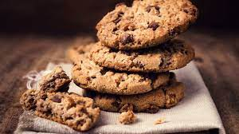

Recette de Cookies

Description:
Cette recette de grand-mère est parfaite pour vos goutés en famille.
Liste d'ingrédients:
- 85g de beurre tendre
- 1 oeuf
- 50g de farine
- 85g de sucre
- 100g de chocolat noir
- 1 c.à.c de levure chimique
- sel, vanille
Recette:
- Détailler le chocolat en pépites.
- Préchauffer le four à 180°C (thermostat 6). Dans un saladier, mettre 75 g de beurre, le sucre, l'oeuf entier, la vanille et mélanger le tout.
- Ajouter petit à petit la farine mélangée à la levure, le sel et le chocolat.
- Beurrer une plaque allant au four et former les cookies sur la plaque. Pour former les cookies, utiliser 2 cuillères à soupe et faire des petits tas espacés les uns des autres; ils grandiront à la cuisson.
- Enfourner pour 10 minutes de cuisson.